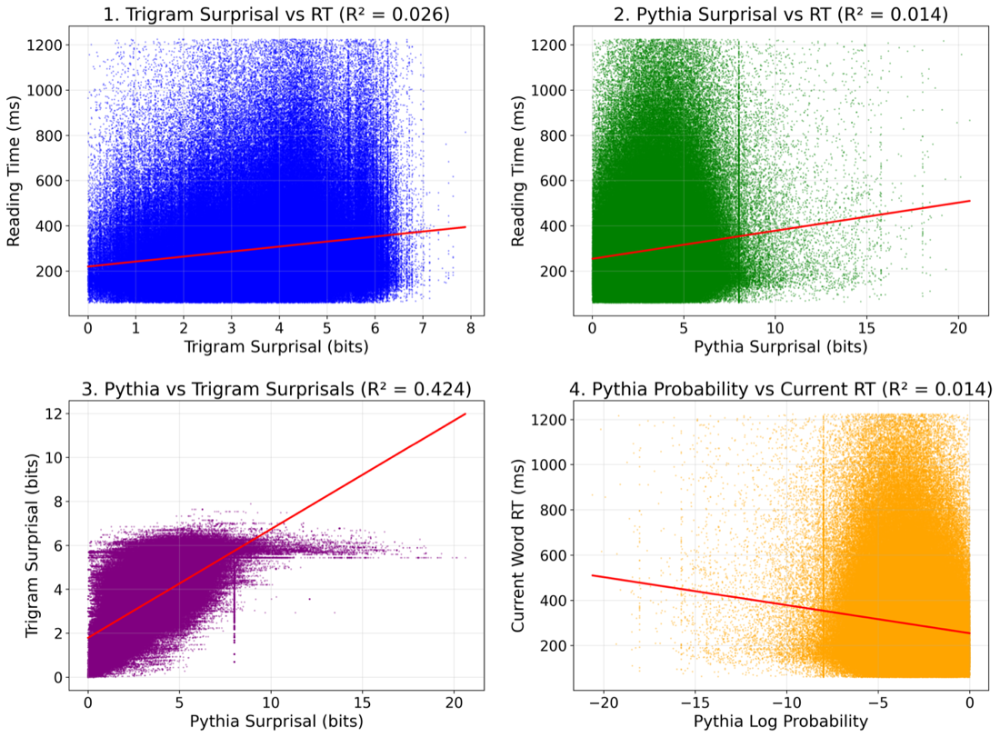
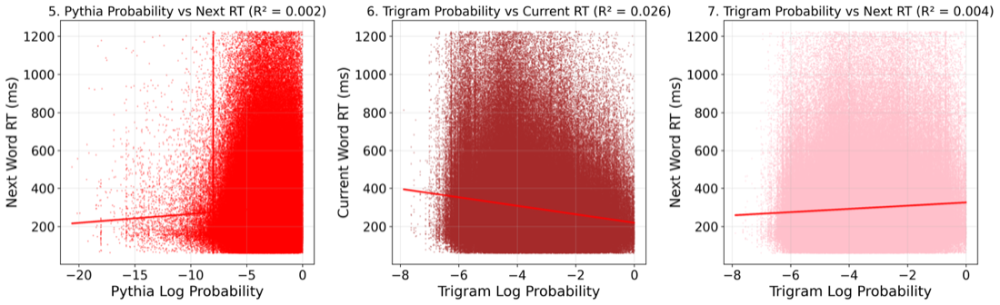
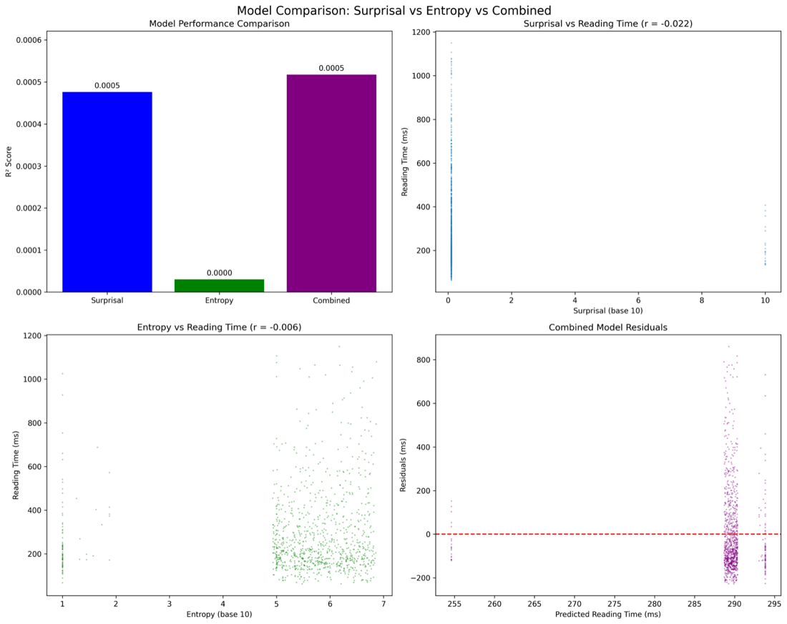
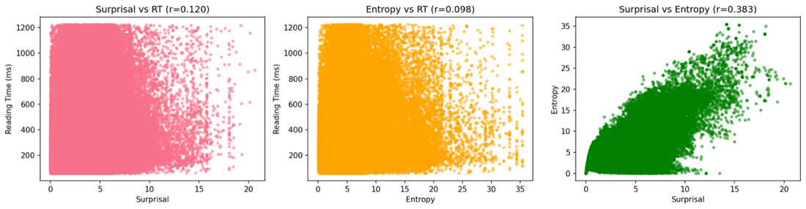

Computational Psycholinguistics combines human language processing with computational linguistics — grammar formalisms, language models, and the cognitive theory of how people understand sentences in real time. The running theme of this repo is surprisal theory: words that are less probable in context take longer to read.
Linguistic-exposure estimation, n-gram tuning + reading-time/surprisal, logistic regression on the dative alternation, garden-path test suites, and a regex syllabifier + CFG parser. Two of these are live demos in this artifact.
"Surprisals & RT's" — Gil Caplan & Ido Beigelman. Compares a KenLM trigram and Pythia neural LM at predicting human reading times on the OneStop corpus, with spillover, GAMs, and an entropy study across model sizes.
syllabify() rules from Pset_5_regex.ipynb split it into syllables in your browser.HW5 asks for a syllabify(word) function that splits an English orthographic word — including made-up "nonce" words — into syllables using general phonotactic rules, not a dictionary. This is a faithful JS port of the notebook's algorithm. Type a word:
aeiouy) is a nucleus, and a recognized diphthong (ai, ea, ou, oy, …) counts as one nucleus spanning two letters.str, bl, th…) while avoiding illegal onsets (tl, nt, mb…).vowels = 'aeiouy'
diphthongs = ['ai','au','ay','ea','ee','ei','eu','ey','ie','oa','oi','oo','ou','oy','ue','ui','aw','ew','ow']
legal_onsets = {'bl','br','cl','cr','dr','fl','fr','gl','gr','pl','pr','tr','tw',
'sc','sk','sl','sm','sn','sp','st','sw','sh','th','wh','ch','qu',
'scr','spl','spr','str','squ','thr','shr','chr', ...single consonants}
# multi-consonant cluster → try longest legal onset for the next syllable
for onset_len in range(min(3,len(cluster)), 0, -1):
if cluster[-onset_len:] in legal_onsets: split_point = v2_start - onset_len; break
capable→ca·pa·ble and nonce words like snoded→sno·ded work; the honest weak spots it documents are compounds (playground), silent letters (castle, island) and morphology, where pure phonotactics over-splits.HW5's CFG task builds context-free grammars in NLTK and parses sentences with a bottom-up chart parser. The final grammar handles filler–gap dependencies (wh-questions and embedded clauses) using "slash" categories (S_SLASH_NP — a clause missing a noun phrase). Below is that exact grammar ported to a JS chart parser. Pick a sentence — accepted sentences should parse, the bad ones should be rejected:
S -> NP VP
NP -> Det N | Pronoun
VP -> V_INTRANS | V_TRANS NP | V_SBAR SBAR
SBAR -> WHNP S | WHNP S_SLASH_NP | COMP S
S_SLASH_NP -> VP_SLASH_NP | NP VP_SLASH_NP
VP_SLASH_NP -> V_INTRANS | V_TRANS | V_TRANS NP
| V_SBAR SBAR | V_SBAR SBAR_SLASH_NP
SBAR_SLASH_NP-> WHNP S_SLASH_NP | S_SLASH_NP
COMP -> 'that' | ε WHNP -> 'who' | 'what'
Det -> the|a|an|my|your|her|his|their N -> joke|women|street|apple
Pronoun -> I|you|she|he|they
V_INTRANS -> 'slept' V_TRANS -> 'devoured' V_SBAR -> 'know'|'said'
The slash category S_SLASH_NP = "a sentence with a noun-phrase gap somewhere inside it". It lets "you know what I devoured ___" parse — the wh-word what is the filler and the gap is the missing object of devoured — while rejecting "I slept that you said" (an intransitive verb cannot take a clause).
BottomUpChartParser and checks each good_sentence parses and each bad_sentence is rejected.Every word gets a surprisal = how unexpected it is given the previous words. Higher bars = more surprising = (predicted) slower reading. Pick a sentence; bar heights come from a small in-page n-gram — the same quantity task_1.py gets from KenLM.
The project's core claim is that higher surprisal → longer reading time, a roughly linear trend. Here a fixed mini-corpus of sentences is scored word-by-word; each dot is a word (its in-page surprisal vs a synthetic RT = baseline + slope·surprisal + noise). The fitted line and R² mirror the shape of the real linregress in task_1.py — clearly illustrative, not the trained model.
task_1.py)logits = self.model(input_ids).logits log_probs = torch.log_softmax(logits, dim=-1) # per token: surprisal = -log P(token | context) / log(10) surprisal_val = -token_log_prob.item() / math.log(10) # tokens are summed back up to whole words via offset mapping prob = 10 ** (-word_surprisal)
Two language models, the same human data (OneStop Eye-Movements, 360 participants, 2.6M tokens), seven regressions of surprisal against IA_DWELL_TIME (Total Fixation Duration).


| Comparison | Result | Reading |
|---|---|---|
| Trigram surprisal → RT | R² = 0.026 | The cheap trigram beat the neural model — ≈84% more explained variance. A surprising, honestly-reported result. |
| Pythia surprisal → RT | R² = 0.014 | |
| Pythia vs trigram surprisal | r = 0.651 (R² = 0.424) | Moderate agreement; the two models overlap but diverge on rare items. |
| Surprisal ranges | trigram 0–7.89, Pythia 0–60.6 bits | Neural subword tokenization blows up on rare technical words. |
| Spillover (current vs next RT) | trigram 0.026 → 0.004; Pythia 0.014 → 0.002 | Spillover real but ≈6.5–7× weaker than the immediate effect. |
find_disagreement_examples() and generate_all_task1_graphs() in task_1.py.Relaxes the straight-line assumption with Generalized Additive Models (pygam), fitting smooth splines of RT on current + lag-1 (spillover) surprisal while controlling for word length and log-frequency, across three reading-time measures.
from pygam import LinearGAM, s rt_measures = ['IA_DWELL_TIME','IA_FIRST_RUN_DWELL_TIME','IA_REGRESSION_PATH_DURATION'] df['surprisal_spill'] = df.groupby([...])['pythia_surprisal'].shift(1) # lag-1 spillover gam = LinearGAM(s(0)+s(1)+s(2)+s(3)).gridsearch(X, y) # surprisal, spillover, length, freq
Finding: RT rises with both current and spillover surprisal across all three measures, but the current-word effect is markedly larger, and for first-run / regression-path duration the spillover effect attenuates at high surprisal (diminishing returns).
The open-ended part asks: does the model's uncertainty about the upcoming word (next-word entropy) predict reading difficulty beyond the unexpectedness of the current word (surprisal)? And how does this change as the model grows from 70M to 1.4B parameters?
compute_word_stats() in utils.py computes both per-word surprisal and entropy from Pythia's softmax; test_hypotheses_() fits three nested linear models (surprisal-only, entropy-only, combined) and reports R² with an OLS F-test. Run across five Pythia sizes in ido_main.py.


| H | Test | Result (Pythia-70M) |
|---|---|---|
| H1 | Surprisal vs entropy as a predictor | Surprisal wins: R²=0.0749 vs 0.0538 (≈39% better) |
| H2 | Does entropy add information over surprisal? | Yes: combined R²=0.0775, ΔR²=+0.0026 (significant) |
| H3 | Is combined model significantly better? | F-test p<0.001 across all five model sizes |
Each HW folder in the repo holds the instructions plus our solution (notebook + PDF write-up).
Estimate your lifetime Hebrew word exposure (tokens, with justification), then model incremental inference about possessor animacy — why "the queen's crown" (prenominal) vs "the cover of the book" (postnominal). HW1/HW1_solution.pdf
Tune an n-gram language model (smoothing / order), then connect model probabilities to human reading time via surprisal — the foundation the project builds on. HW2/Pset_2_Tuning_ngram_model_3…pdf, Pset_2_RT_and_surprisal_4…pdf
Fit statsmodels GLM (Binomial) models of the English dative alternation ("mailed me a gift" vs "mailed a gift to me") from pronominality and length of the recipient/theme; compare raw vs log lengths and relative length difference by test accuracy. HW3/Pset_3._solutionipynb.ipynb
Use a pre-trained RNN LM + test-suite methodology to probe garden-path / reduced-relative ambiguity ("The horse raced past the barn fell") — does the model's surprisal spike at the disambiguating region like humans? HW4/Gil_Ido_Pset_4.pdf
A phonotactic-rule syllabifier and a series of context-free grammars (ambiguity, agreement, filler–gap). Both are live above. HW5/Pset_5_regex.ipynb, Copy_of_Pset_5_cfg.ipynb
Trigram vs neural surprisal, spillover, GAMs, and an entropy / model-scaling study on OneStop. See the two project tabs. Task 1/, Task 2/, unstructered/